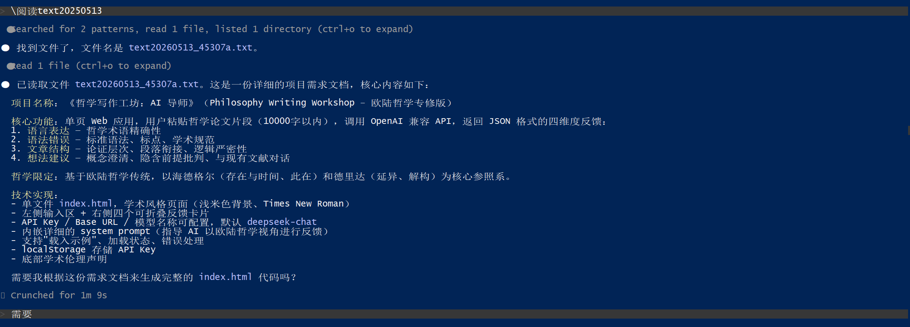
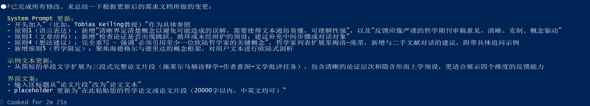
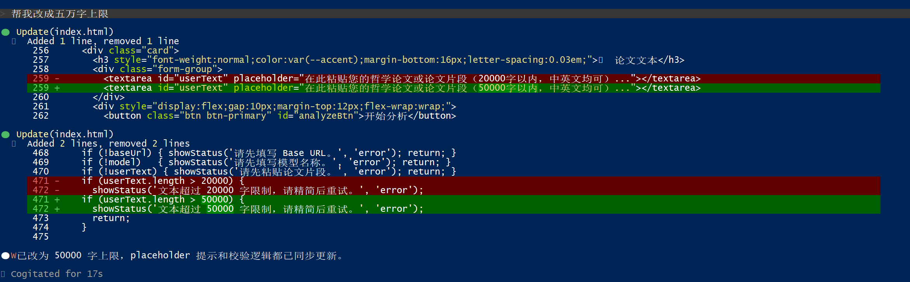
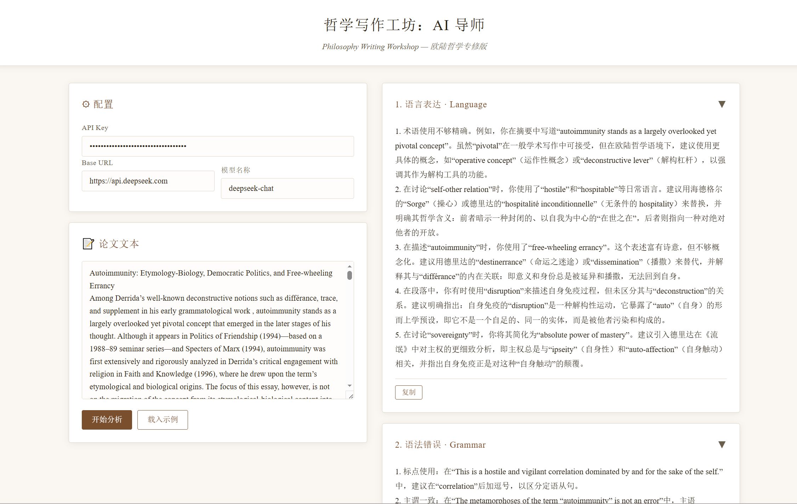

《哲学写作工坊：AI 导师》是一个面向哲学学术写作的单页 Web 互动工具，专攻欧陆哲学方向。用户粘贴一篇哲学论文片段（最多 50,000 字），点击分析后，AI 会从语言表达、语法错误、文章结构、想法建议四个维度对文本进行结构化反馈。反馈严格依照欧陆哲学传统（尤其以二十世纪现象学哲学家海德格尔与德里达为核心参照系），模拟严谨的哲学期刊审稿意见。
项目以单个 index.html 文件交付，无需服务端，双击即可在浏览器中运行。所有代码通过 Claude Code 以自然语言驱动生成。
这个项目的灵感来源于我在英国华威大学攻读哲学硕士期间的真实困境。一方面，英语学术写作的规范远比国内严格——学术工业对术语精确性、论证严密性和结构清晰度有很高要求，而这些在课程中很少被系统讲授。另一方面，导师的 Office Hour 时间有限，有时因导师繁忙或会议冲突难以约到，论文修改意见往往来得太晚或不够具体。
我意识到，这种困境并非个例——许多文科学生（尤其是哲学专业）在无论国际化还是国内的学术环境中都面临类似问题。现有的 AI 写作工具大多面向通用场景，缺乏对特定学科传统的深入理解。因此，我希望创造一个聚焦于欧陆哲学这一细分领域的写作反馈工具，它不提供写作思路（因而不会构成抄袭），而是以学术标准为准绳，针对用户已有文本给出可讨论的修改方向和批判性追问，与 AI 形成友好的、启发式的交流氛围。
整体设计遵循"尽量简洁，不花里胡哨"的原则。用户无需填写 API Key、Base URL 或模型名称——这些配置项预置于界面中（可修改但非必须），用户只需粘贴文本并点击分析。同时提供"载入案例文本"按钮，让首次使用者能快速体验完整流程。
界面采用左右双栏布局：左侧为输入区（配置卡片 + 文本输入卡片），右侧为四个反馈卡片。四个反馈卡片分别对应四个评价维度，点击卡片标题可折叠/展开，每张卡片配有独立"复制"按钮，方便将反馈内容粘贴到其他地方使用。
配色方案采用学术期刊风格——白色背景、深色文字、浅米色卡片，搭配 Times New Roman 和宋体字栈。页面不使用任何鲜艳色彩或装饰性元素，整体克制、沉稳，与哲学写作的严肃气质一致。底部以简洁的学术伦理声明收尾，强化工具的学术定位而非娱乐属性。
第一步：领域聚焦。将项目范围从泛化的"写作辅助"收敛到"文科 → 哲学 → 欧陆哲学"，这一连串限定使得 AI 反馈有了明确的学术参照系，避免了通用写作工具"什么都能评、什么都评不深"的问题。
第二步：维度划定。借鉴学术工业中教授评价论文的通行框架，确定四个反馈维度（language, grammar, structure, ideas），并针对每个维度编写详细的 system prompt 指令。例如，语言表达维度不仅检查术语精确性，还要求 AI 具体指出可用海德格尔式或德里达式的概念来替代模糊表达。
第三步：哲学锚定。在 system prompt 中嵌入海德格尔和德里达的核心概念作为参照系，并要求 AI 对用户文本进行"欧陆式剖析"——识别隐含的在场形而上学预设、主体中心主义等，以苏格拉底式追问引导思考深化。同时要求引用具体原著章节（如《存在与时间》§44、《论文字学》第二部分），将反馈从泛泛而谈提升到可操作的学术对话层面。
第四步：学术规范内建。在 prompt 中明确禁止诗化、文学化的评价语言，要求反馈如"严谨的哲学期刊审稿意见，清晰、克制、概念驱动"。页面底部内置学术伦理声明，确保工具的学术合规性。
第五步：迭代调试。通过 Claude Code 反复调整——从字数限制的放宽（10,000 → 50,000 字）、system prompt 的精细修订、示例文本从单段扩展为三段式完整论证，到错误处理的完善，每一步都是基于实际使用体验做出的改进。
index.html 文件。随后通过多轮对话进行迭代：修改字数上限、扩展 system prompt（新增 Tobias Keiling 教授参照、哲学限定条款）、完善示例文本、调整界面文案等。每次修改后立即在浏览器中测试。

在线体验：
index.html，双击用浏览器打开即可。项目文件（均保存于 C:\Users\26433\Desktop\vibe coding\ 文件夹）：
text20260513_45307a.txtindex.html（单文件，约 570 行，双击即可运行）项目介绍.html（本文件，可在浏览器中打开并打印为 PDF）
